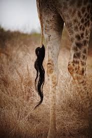
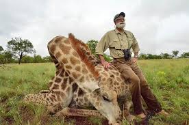
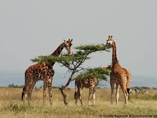
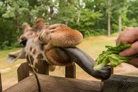
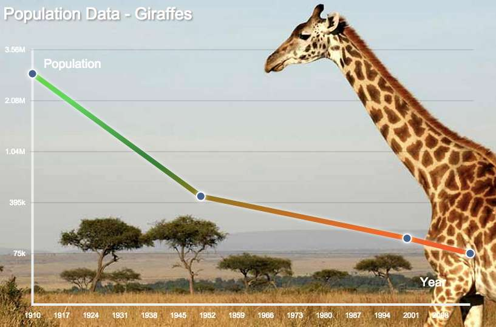

What are Giraffes?
Giraffes are the world's tallest mammal, and their legs alone are taller than most humans at about six feet. They eat leaves and buds off of tree branches with their long necks, and they generally travel in heards. No two giraffes have the same spot patterns, although giraffes from the same areas can have very similar shapes and distributions of spots.
Why are They Endangered?
Humans are losing their living space, and they are being hunted causing them to become endangered. Humans activity and building on land has made many giraffes loss their source of food, the acacia tree. Without this, herds sizes have started dwindling down to only a few giraffes, and the size of the land they live on is decreasing. Giraffes are also hunted for their tails, meat, and hides. The tail is wanted by many hunters because they can be sold to create many products. Many poachers also hunt giraffes for their meat and hides. This hunting has caused a major decrease in giraffes poplation size.
    Conservation and Solutions
One solution is to educate communities on more conservative agricultrl practices in order to minimize our affect on giraffe's natural habitats. This education can provide communities near giraffe populations with more sustainable and productive methds for both their own communities and the giraffe population. Planting more acacia trees can also help save the giraffes by giving herds more available food and larger possible habitats.
It is important to save the giraffes as they are a beautiful and graceful species. They contribute to the Africa ecosystem as a whole, and without them, many other species would suffer. The destruction of the giraffe population can easily be reversed if the right course of action is taken, and it is important to save them before another majestic species becomes extinct.